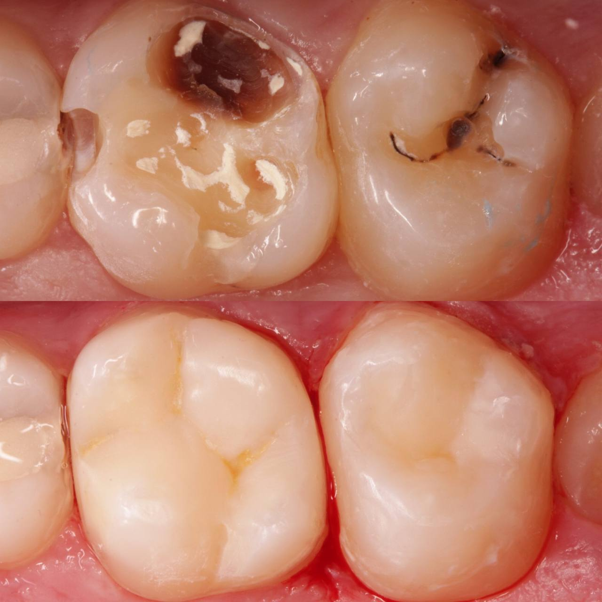
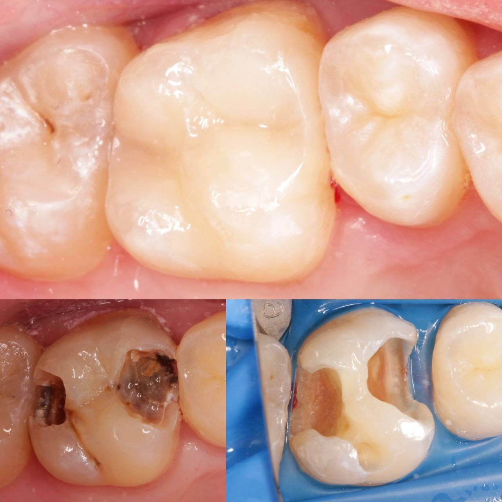
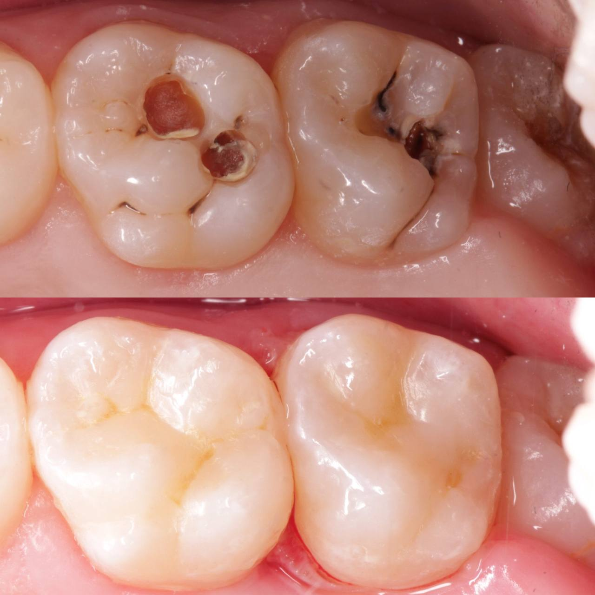
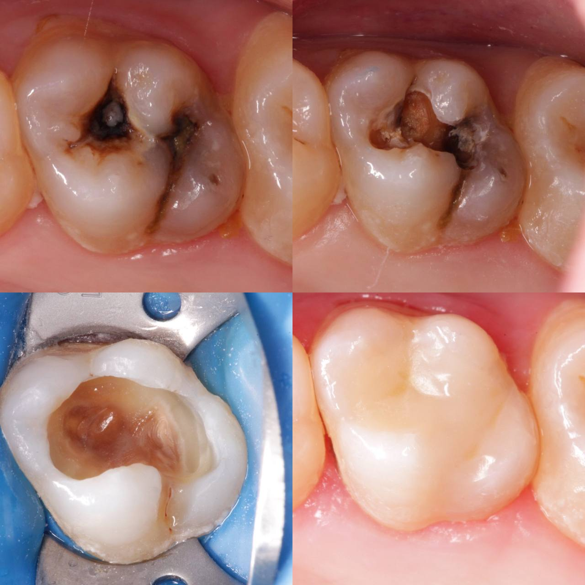
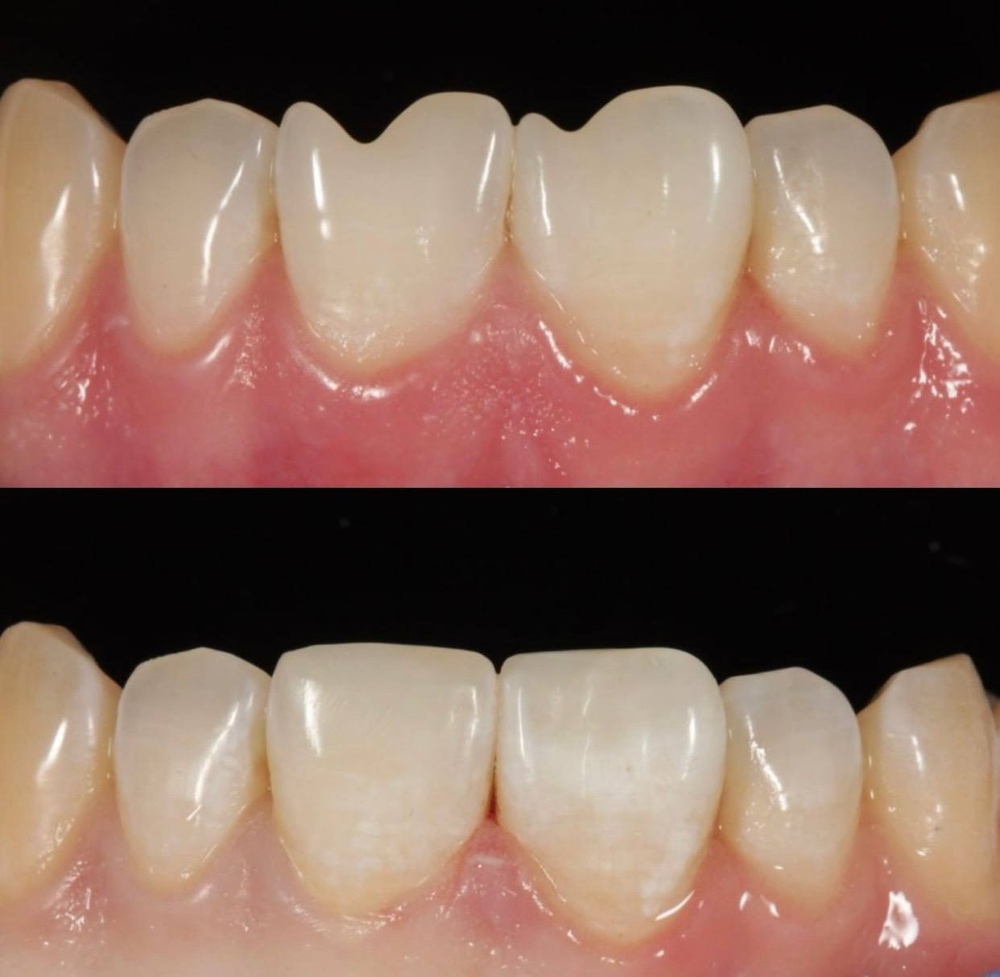
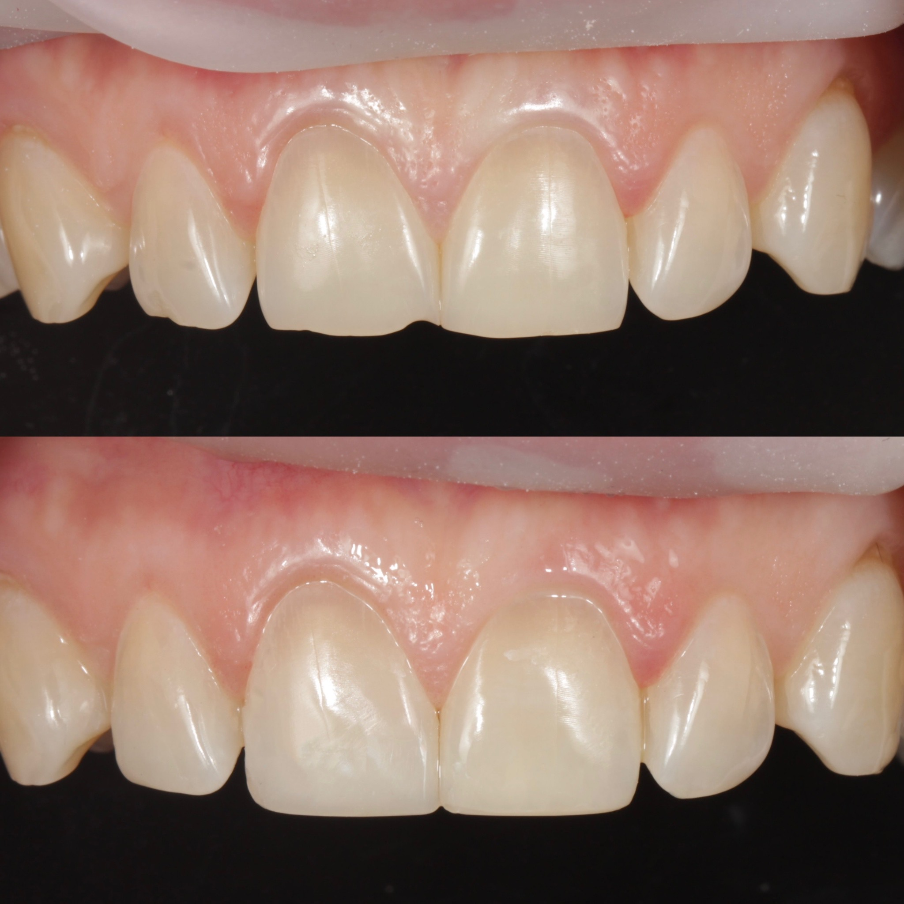
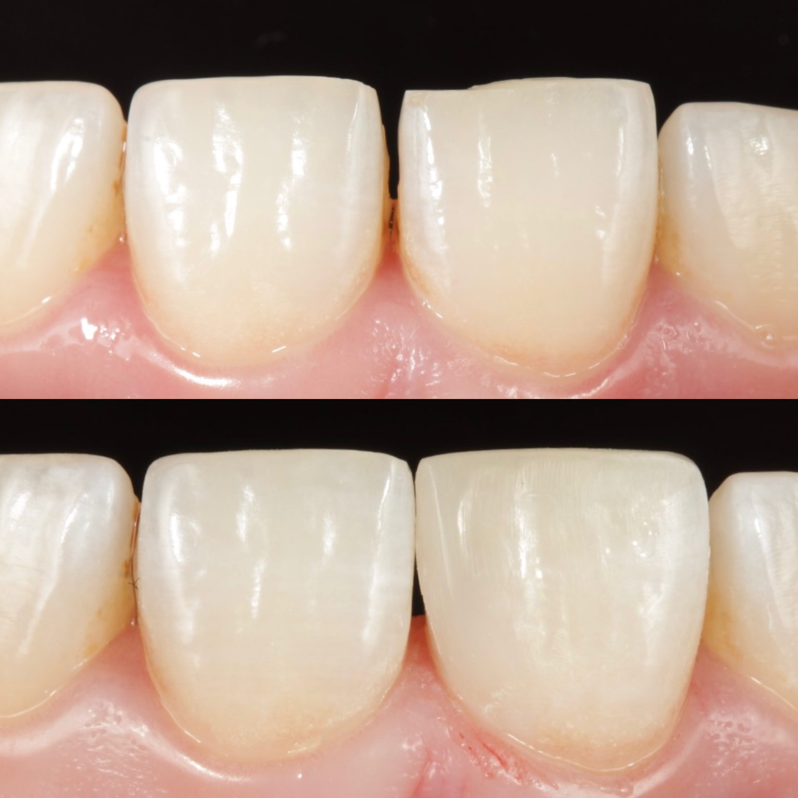
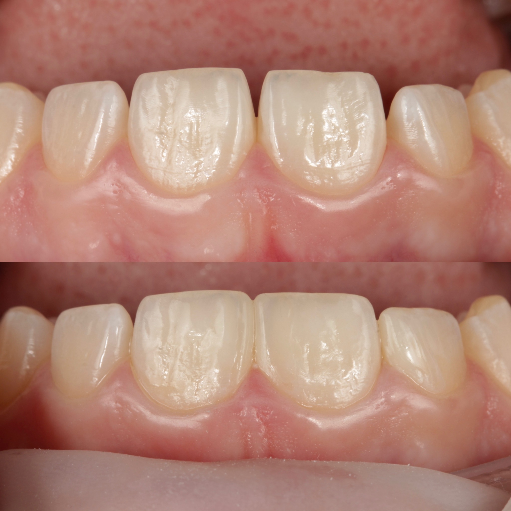

Сохранение и эстетическое восстановление естественных зубов врачом Андреем Малюкиным. Комфортная местная анестезия, обязательная изоляция коффердамом и надежные фотополимерные реставрации.

Диагностируем и устраняем заболевания зубов на любой стадии, сохраняя максимум здоровых тканей.
Бережное удаление некротизированных тканей при поверхностном, среднем и глубоком кариесе. Пломбирование качественными фотополимерными композитами (Estelite, Harmonize) с точным воссозданием фиссур и бугров.
Снятие острой или ночной боли. Удаление воспаленной пульпы, механическая обработка каналов гибкими никель-титановыми инструментами, антисептическая обработка и герметичная 3D-обтурация гуттаперчей.
Устранение хронического воспаления у верхушки корня зуба. Тщательная дезинфекция корневой системы, временное лечебное пломбирование препаратами кальция и рентген-контроль заживления кости.
Прямое восстановление формы и цвета передних и жевательных зубов. Послойное нанесение композита с индивидуальным подбором оттенка под эмаль при сколах, трещинах или стираемости.
Диагностика скрытого разрушения под негерметичными или потемневшими старыми реставрациями. Замена пломбы до того, как инфекция проникнет в нерв и вызовет пульпит.
Устранение дефектов эмали в пришеечной области зуба. Снятие гиперестезии (повышенной чувствительности к холодному/кислому) и пломбирование высокоэластичными композитными материалами.
Мы лечим зубы по проверенным протоколам, обеспечивающим максимальную адгезию пломбировочного материала и защиту корневых каналов от повторного инфицирования.

Фиксированная стоимость терапевтического лечения без скрытых платежей. Бесплатная первичная консультация врача.
Прозрачный алгоритм действий от первичного осмотра до контроля прикуса.
Оценка состояния зуба, прицельный рентген-снимок для выявления скрытого кариеса или воспаления в корнях, составление плана лечения.
Введение современной местной анестезии и установка защитного латексного платка (коффердама) для сухого рабочего поля.
Аккуратное удаление поврежденных тканей или механическая и антисептическая обработка корневых каналов с промыванием антисептиками.
Послойное восстановление анатомии зуба фотополимером, проверка прикуса копиркой и финишная полировка под естественный блеск эмали.
Более 15 лет практического опыта в терапевтической стоматологии, эндодонтии и восстановлении зубов. Лично проводит первичные осмотры, цифровую диагностику и выполняет реставрации фотополимерными композитами с обязательной изоляцией коффердамом и контролем прикуса.
Примеры восстановления анатомической формы и эстетики зубов пациентов врачом Андреем Малюкиным.








Ответы врача-терапевта Андрея Малюкина об анестезии, коффердаме, сроке службы пломб и лечении каналов.
Получите детальный осмотр и комфортное лечение зубов в клинике на ул. Новаторов 1А (Киевский район, Таирова).
Адрес: г. Одесса, ул. Новаторов 1А (Киевский район, Таирова / Черемушки).
График работы: Пн–Пт: 09:00 – 20:00, Сб: 10:00 – 16:00.
Нужна имплантация или протезирование?
Посмотреть услуги имплантации зубов →